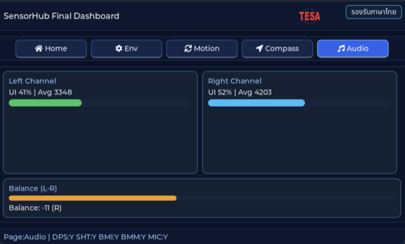
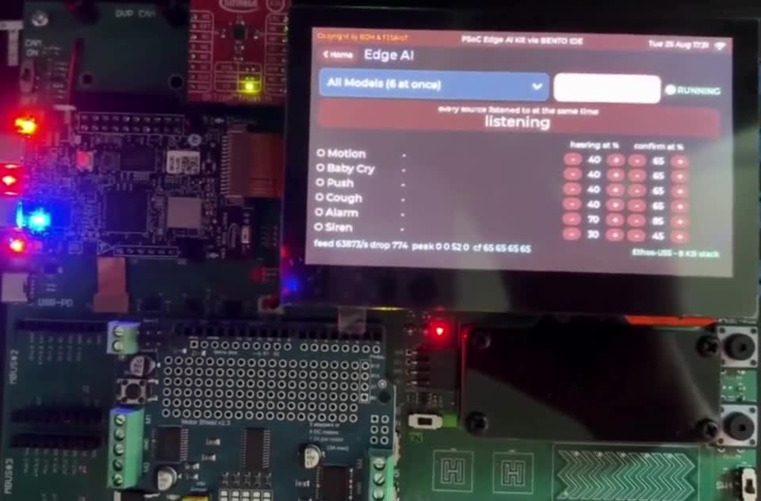

01 / INPUT → OUTPUT
หมุนหนึ่งครั้ง เห็นไอเดียเป็นสี
ลอง Pot → RGB บนหน้าเว็บ แล้วเปิด Source สำหรับ Hardware จริง การเลือกสีด้วย Threshold ไม่ใช่ AI
เปิด Hardware ExampleFEATURED / A CURATED STARTING POINT
เลือกสามเรื่องที่อธิบายสิ่งที่บอร์ดทำได้ ตั้งแต่ Input / Output จนถึงเส้นทาง Edge AI
01 / INPUT → OUTPUT
ลอง Pot → RGB บนหน้าเว็บ แล้วเปิด Source สำหรับ Hardware จริง การเลือกสีด้วย Threshold ไม่ใช่ AI
เปิด Hardware Example
SOURCE SCREENSHOT02 / SENSE → UNDERSTAND
เริ่มอ่าน Sensor และรวมข้อมูลเป็น Dashboard เพื่อเข้าใจ Input ก่อนต่อยอด Application
สำรวจ Sensor Hub
EXISTING DEMO · 0:3903 / SIGNAL → INTELLIGENCE
ดูคลิป BENTO ต้นทาง แล้วเลือกเส้นทาง Audio, Motion หรือ Vision จาก Reference ของ Infineon
เข้าสู่ Edge AI HubCURATED, NOT RANKED
ไม่ใช่หมวด Hardware ไม่ใช่คะแนนนิยม และไม่ใช่ตรารับรอง Compatibility แต่ละเรื่องแสดงสถานะและทางไป Source ของตัวเอง
สำรวจ Hardware ทั้ง 9 Examples